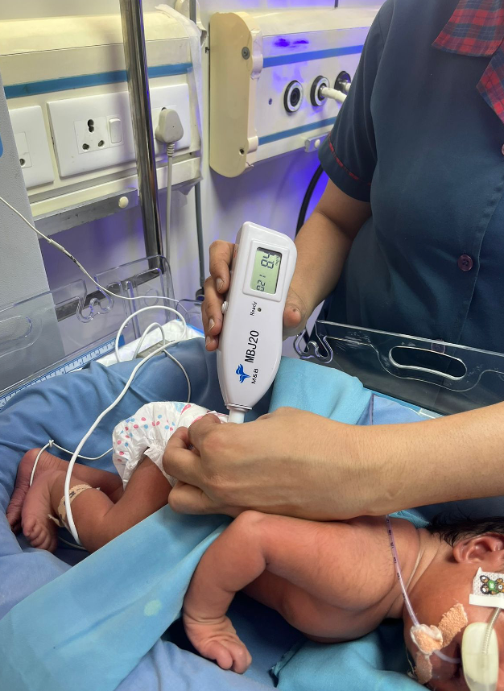
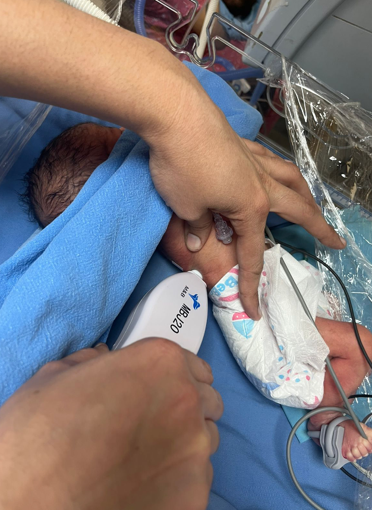

Newborn Jaundice: A Race Against Time and Systemic Failure
Annual Births
(Screening Need)
Undergo Phototherapy
(Treatment Demand)
Extreme Cases
(Low-Resource Regions)
Fatality Rate
(Without Intervention)
Jaundice is a race against permanent brain damage.
Every minute counts. Delayed diagnosis leads to irreversible neurological and auditory disorders, turning a treatable condition into a lifelong disability or a fatal outcome.
If jaundice is a race, our current healthcare ecosystem is running with a blindfold. The scale is massive, but we face two critical failure points.
Failure Point 1: The Danger of "Eyeballing"
In rural PHCs/CHCs, doctors lack any measurement tools. They rely on visual inspection—or "eyeballing"—to guess the jaundice level. This guesswork is the primary reason the race is lost before it even begins.

Failure Point 2: The Urban Monitoring Gap
Even in high-tech NICUs, the race is slowed by 4–8 hour lab delays for invasive blood tests. Moreover, current non-invasive devices are skin-tone biased, showing up to 30% error rates on darker skin.


The Consequence: The Treatment Paradox
Because our diagnosis is often slow or biased, the 2.5 Million babies under therapy are managed reactively. Without precision data, treatment duration is extended unnecessarily, exposing newborns to prolonged blue light and avoidable clinical complications.
Long duration of treatment causes


Two Bets, One Product
A great product sits at the intersection of a market bet and engineering bets. Here's exactly what we wagered — and how we planned to know if we were wrong.
Operator Dependency Blocked Nurses. Accuracy Wins Clinicians.
We hypothesized that adoption would fail not because of accuracy gaps, but because of
operator dependency. Existing handheld devices required nurses to
charge,
sanitize, and hold the device at a precise angle, a 5–6 minute fragile
ritual
that introduced operator bias the moment the angle shifted.
If a wearable could deliver a reading in under 20 seconds with zero handling
protocol, frictionless adoption would follow — regardless of whether
accuracy was
slightly better than a blood test.
Additionally, we hypothesized that in the treatment monitoring phase,
superior
accuracy in tracking jaundice trends would make us the preferred clinical choice for
neonatologists deciding when to start or stop phototherapy treatment.
Two adoption paths: Frictionless workflow for
nurses. Superior treatment monitoring for clinicians.
During high-census shifts, nurses skipped handheld readings entirely, the 5–6 minute setup ritual was incompatible with ward pace.
Nurse adoption >80% in pilot wards within 4 weeks, with zero training sessions required.
We Bet on Physics That Had Never Been Proven in a Wearable at Scale.
We bet on spectroscopy-based multi-site
sensing at a
time when no peer-reviewed device had successfully removed skin-tone bias using this
method.
Compounding this, we were operating under a fixed grant
timeline. A failed clinical trial would terminate funding with no second
attempt.
The market hypothesis only held if the physics held. Without cracking both of these engineering bets, the "frictionless adoption" promise was empty, and the accuracy story for neonatologists would fall apart entirely.
The Multi-Site Signal Hypothesis
If we capture light patterns (spectral signals) from multi-sites (forehead, sternum, foot) simultaneously using a patch, we can triangulate the true bilirubin value, canceling out the "noise" of skin pigmentation and motion.
Recalibrating the Gold Standard
We wouldn't just match the Gold Standard (blood test), we would recalibrate it. By mapping the known errors of blood tests (like lab handling errors), we trained our device to outsmart the flaws of the standard itself.
Forging a Vision Amidst Conflict
Product Vision
"Every newborn in India — regardless of skin tone, location, or hospital tier — receives accurate, non-invasive jaundice screening within seconds of birth."
I defined this vision to position ShishuCare as the "Standard of Care for Non-Invasive Neonatal Screening" — a product that doesn't just screen, but guides treatment decisions in real time. But the path to this vision was blocked by a fundamental tension: Neonatologists demanded "ICU-grade accuracy or nothing." Engineers countered with "sensor cost constraints make that impossible." My job was to find the strategy where clinical trust and engineering feasibility could coexist — a multi-site spectroscopy approach validated against the gold standard's own known errors.
Stakeholder Map
Navigating the Indian healthcare ecosystem required identifying not just the user, but the buyer, the decision maker, and the influencer.
Who controls adoption— the user, the regulator, or the funder?

Neonatal Health Nexus of India

Ecosystem Analysis:
• Neonatologists (Decision Makers): Care about Clinical Validity & Data
granularity.
• Nurses (Users): Care about "Zero Friction" & Workflow speed.
• Hospital Admin (Buyers): Care about Cost, Maintenance, and Asset
tracking.
That a non-invasive approach could be trusted for treatment decisions — not just screening. I proposed dual validation: against serum bilirubin and against tracked phototherapy outcomes.
That the higher upfront cost was offset by reduced lab orders and nurse time savings — shifting the conversation from price to total cost of care.
That the market size justified the clinical risk. I built a segmented market model — 44,000 private hospitals vs. 37,725 govt facilities.
That "recalibrating against the gold standard's known errors" was a valid scientific strategy — not a workaround.

National Mission Alignment
ShishuCare’s product roadmap was designed to directly support the India Newborn Action Plan (INAP) goal: Single-digit Neonatal Mortality Rate by 2030.
Compliance as a Moat
Navigated "Privacy of Data" concerns from security stakeholders. Designed "Audit Trails" into the MVP architecture early to prevent a costly re-write for Class II compliance.
Stakeholder Alignment
Facilitated workshops to align clinical requirements with technical feasibility.
Navigating the Ecosystem: From Lab to Last-Mile
| Channel | Decision Maker | Mechanism | Insight Gained |
|---|---|---|---|
| Public (Tertiary) | Medical Superintendent (MS) / Purchase Dept | Government e-Marketplace (GeM) Portal (Central Public Procurement Portal (CPPP)) | Requires 3 quotations; decision rests on lowest cost vs. quality specs. |
| Corporate Hospitals | Group Medical Director / Medical Superintendent (MS) | Direct Purchase / Branch Network | Strict hierarchy; Slow initial entry but enables easy cross-branch scaling. |
| Public (PHC/CHC) | Block Medical Officer / Chief Medical Officer (CMO) / Health Secretary | Govt Procurement Units | Budget hierarchy: BMO/CMO for small, Health Secretary for big budgets. |
| Rural (Sub-centers) | Non-Governmental Organizations (NGOs) (supported by WHO/BMGF) | Grant-funded ASHA Training | NGOs fill service gaps; crucial for trust in grassroots communities. |
| Private Clinics | Doctor / Owner | Local Distributor Networks | Local trust and immediate support are the primary purchase drivers. |
Customer Segmentation & Market Sizing

Living in the NICU
We didn't just build a device from a lab; we immersed ourselves in the NICU environment. I spent weeks collaborating closely with neonatologists, nurses, and hardware engineers to understand the visceral constraints of neonatal care.


Key Insight: Existing non-invasive devices were sensitive to motion artifacts and skin pigmentation variations, leading to high false-positive rates.
ROI-Driven Roadmap: Impact vs. Effort
In a resource-constrained environment with a single shot at clinical validation, prioritization wasn't a planning exercise, it was a risk management call. We used an **Impact vs. Effort Matrix** to separate clinical moats from feature bloat.
Quick Wins (High Impact / Low Effort)
20-Second Screening Protocol: Reducing screening time from 6 minutes to 20 seconds was the primary adoption lever for over-burdened nurses.
Strategic Stakes (High Impact / High Effort)
Skin-Tone Agnostic ML: Engineered proprietary algorithms to de-bias optical signals, establishing our primary competitive moat against global incumbents.
Tactical (Mid Impact / Mid Effort)
Regulatory Architecture: Integrated audit trails into the MVP to eliminate post-launch bottlenecks for FDA/CDSCO approval.
Cut (Low Impact / Strategic Deferral)
Wireless Range & Pulse Oximetry: Deliberately cut these features to reduce engineering complexity and protect the core accuracy story during pilot phase.
AI-Driven Signal Denoising
The core innovation of ShishuCare is its intelligent "wearable patch" form factor combined with AI. We developed a proprietary ML algorithm to denoise optical signals, filtering out motion artifacts and ambient light interference.
This required tight collaboration between the hardware team (sensor design) and the software team (AI model), which I facilitated as the Technical Product Lead.
Risk vs. Benefit Analysis
Every product decision involves a trade-off. We used a Risk/Benefit Matrix to make the critical decision on Device Power.
Benefit: Better ergonomics for the baby.
Risk: Battery lasts only 6 hours. Device dies mid-monitoring.
Severity: CRITICAL
Benefit: 24-hour continuous monitoring.
Risk: Slightly bulkier on the neonate's foot.
Severity: LOW
The Decision: We accepted a slightly larger footprint to ensure 24-hour continuous monitoring capability. "Uninterrupted Data" was the core safety requirement, outweighing the minor ergonomic cost.
What We Chose NOT To Do
Even when neonatologists asked for it, we deliberately chose not to
integrate
pulse oximetry in V1. Adding a second parameter would have doubled sensor complexity and
diluted our core accuracy story.
We also cut wireless range extension and a companion mobile
app — betting that a single, clinically trusted metric (bilirubin) was
more valuable than a feature-rich device with marginal overall accuracy.
Outcomes & Validation Clinical Benchmark: Serum Bilirubin
The strategic focus on accuracy and regulatory alignment paid off. We successfully validated the device in a tertiary care setting.
PM Retrospective: What Went Wrong?
The Failure
Early optical sensors failed on darker skin tones, leading to a 30% false-positive rate in our first pilot.
The Fix
We pivoted to a multi-wavelength sensor array to normalize for pigmentation variations.
The Lesson: "Bench testing is not a proxy for Clinical diversity. Inclusive design must be a safety requirement, not an edge case."